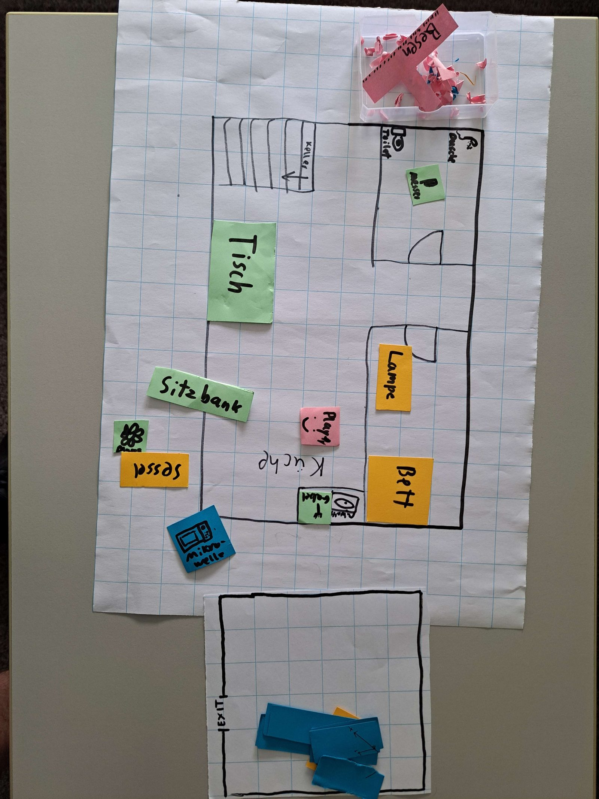
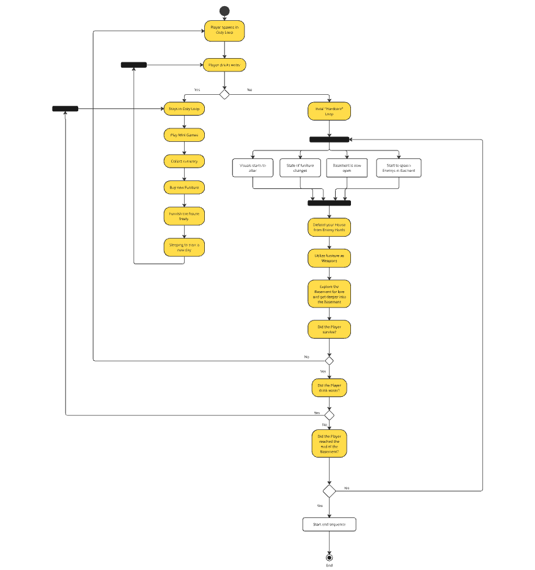
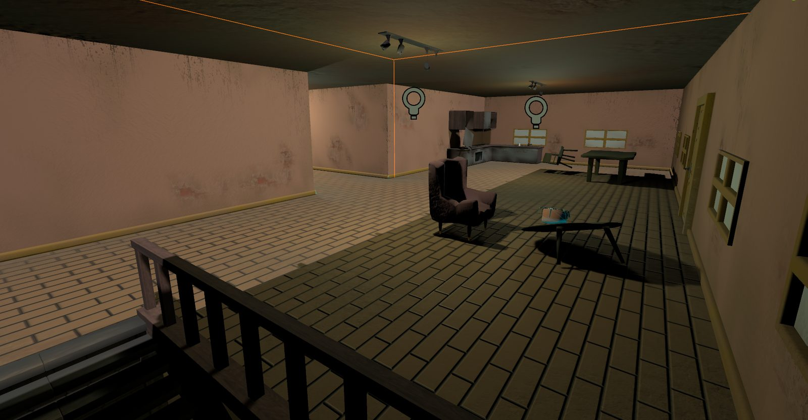
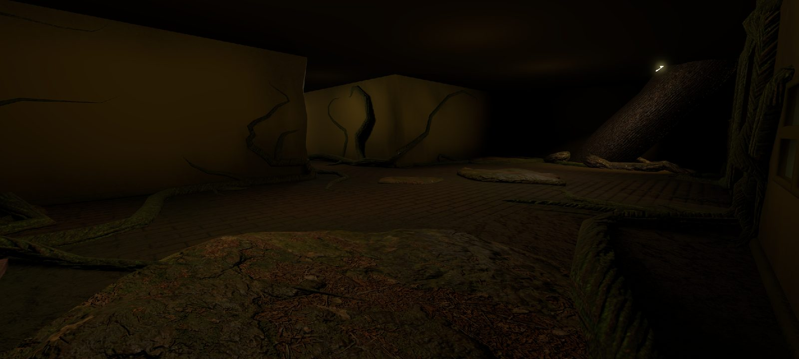
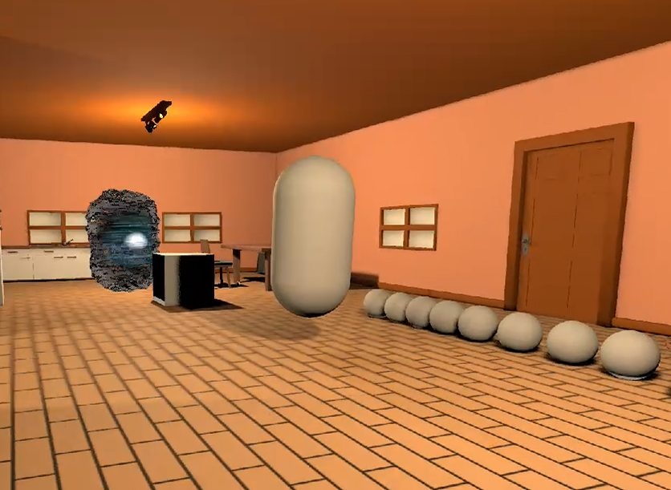
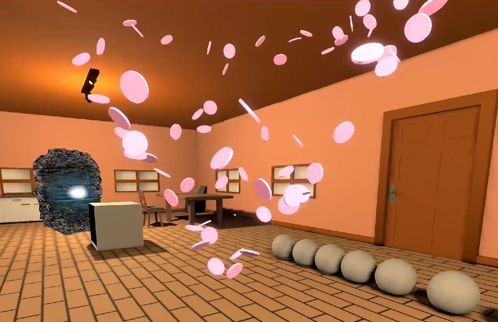
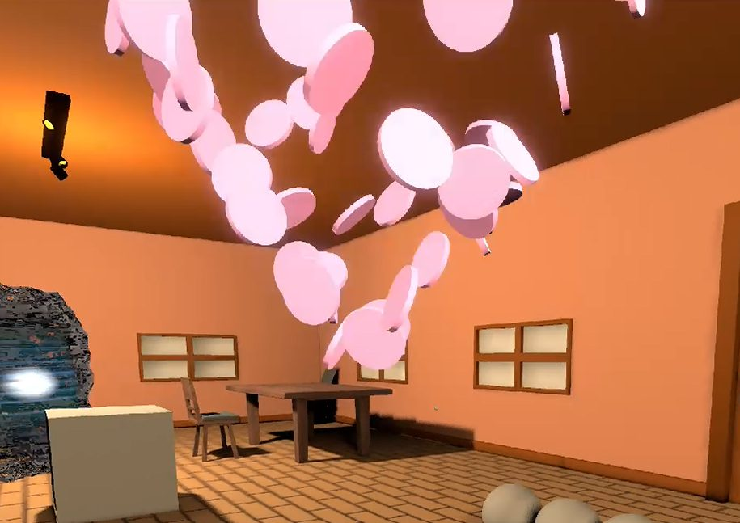
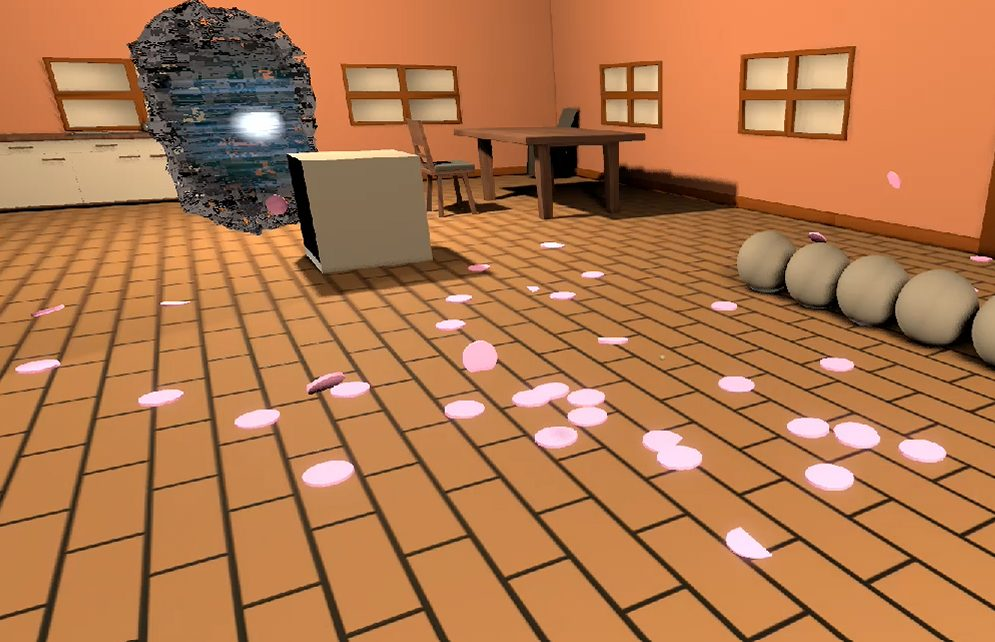

// 01 · Case Study
Home ?weet Home
A case study in comfort as a control system — a cozy life sim that flips into physics-based action the moment the player stops complying.
- Team
- 4 people (student project)
- Role
- Game Design (Lead), Sound Design, supporting Implementation
- Timeframe
- 6 weeks
- Tools
- Godot

Overview
A player settles into a warm, cozy apartment — as long as she follows the instructions of a caring narrator, symbolized by drinking water regularly. If she refuses, that same apartment turns into a physics-driven fight for survival: furniture becomes weapons, the house visibly decays, and enemies swarm up from the basement. Both states share one economy, so the player can retreat back into comfort at any time. Only gradually does it become clear that the apartment isn't really an apartment at all, but a coma-induced sanctuary built by the protagonist's own psyche — and the narrator isn't external, he's her own subconscious.

Design Challenge
My core responsibility on this project wasn't any single mechanic, but the question: what should feel like safety to the player, and how does that exact feeling tip into control and threat? That question had to be answered consistently across every layer of design — the economy, the physics handling, the visual decay stages, and the sound design.
- Money is earned effortlessly in the Cozy Loop through mundane tasks like throwing out trash or vacuuming — a deliberate inversion of the protagonist's real financial insecurity, so spending becomes self-soothing, not progression
- Four stages of environmental decay — from warm, low-poly domestic comfort to a bio-mechanical fusion in the depths — track the protagonist's psychological facade at the same pace
- Weight classes translate control versus being slowed down directly into physics parameters (mass, damping, knockback curve): light objects throw fast and risky, heavy ones slow the player but hit as area weapons



My Contribution
As lead designer, I orchestrated the economy, physics, visual decay, and sound layers so they reinforce each other instead of existing side by side. Before any digital implementation, I ran six analog paper-prototype tests to check whether the narrator actually provokes rebellion. Three findings changed the design directly: most test subjects complied with the narrator almost unconditionally, so rebellion had to be designed as a conscious, active choice rather than a natural reflex; even a slight shift in the narrator's tone from friendly to ironic flipped players' trust, so the narrator now starts out fully sympathetic before cracks slowly creep in; and absurd details — a bed in the bathroom, an irrationally expensive shop item — created unease without any dialogue, confirming the illusion could break through spatial and economic means alone. I added the sound layer late, once the systems were stable enough to make hits and currency pickups feel tangible.




Outcome & Learnings
The Dual Core Loop, the weight-class furniture system, and the shared economy are fully designed and mostly implemented. The dynamic tonality and rebellion system was validated by playtests but wasn't implemented due to time constraints, and two of three planned minigames are playable — these gaps are documented openly in the design document, not hidden. Taken as a whole, the prototype isn't a good experience yet: it confuses players more than it's fun, though testers could see the intended vision.
The biggest lesson wasn't systemic. A teammate and I disagreed from the start on ludology versus narratology — she wanted story to lead, I wanted game feel and systemic depth first — and in week 4 I got stuck defending my own proposal for the Cozy/Hardcore transition instead of addressing the bigger question of why the player acts at all, costing the team time. I apologized and deliberately changed my role afterward: argue less for individual decisions, and moderate the shared direction instead. A design document only serves its purpose if the team actually uses it — a beautifully made diagram nobody reads is worthless.